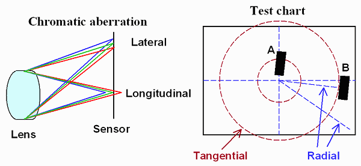

Chromatic Aberration
- 빛의 파장에 따라 다른 초점 거리를 가짐.
- Chromatic : 색채
- Aberration : 일탈 / 변형

- 종 색수차(Longitudinal/Axial Chromatic Aberration)
- 횡 색수차(Lateral/Yanal Chromatic Aberration)
// ref: https://github.com/Unity-Technologies/Graphics/blob/master/com.unity.render-pipelines.universal/Shaders/PostProcessing/UberPost.shader
#define DistCenter _Distortion_Params1.xy
#define DistAxis _Distortion_Params1.zw
#define DistTheta _Distortion_Params2.x
#define DistSigma _Distortion_Params2.y
#define DistScale _Distortion_Params2.z
#define DistIntensity _Distortion_Params2.w
#define ChromaAmount _Chroma_Params.x
float2 DistortUV(float2 uv)
{
// Note: this variant should never be set with XR
#if _DISTORTION
{
uv = (uv - 0.5) * DistScale + 0.5;
float2 ruv = DistAxis * (uv - 0.5 - DistCenter);
float ru = length(float2(ruv));
UNITY_BRANCH
if (DistIntensity > 0.0)
{
float wu = ru * DistTheta;
ru = tan(wu) * (rcp(ru * DistSigma));
uv = uv + ruv * (ru - 1.0);
}
else
{
ru = rcp(ru) * DistTheta * atan(ru * DistSigma);
uv = uv + ruv * (ru - 1.0);
}
}
#endif
return uv;
}
float2 uvDistorted = DistortUV(uv);
half3 color = (0.0).xxx;
float2 coords = 2.0 * uv - 1.0;
float2 end = uv - coords * dot(coords, coords) * ChromaAmount;
float2 delta = (end - uv) / 3.0;
half r = SAMPLE_TEXTURE2D_X(_SourceTex, sampler_LinearClamp, uvDistorted ).x;
half g = SAMPLE_TEXTURE2D_X(_SourceTex, sampler_LinearClamp, DistortUV(delta + uv) ).y;
half b = SAMPLE_TEXTURE2D_X(_SourceTex, sampler_LinearClamp, DistortUV(delta * 2.0 + uv)).z;
color = half3(r, g, b);
// ref: [2019 - [Unite Seoul 2019] 최재영 류재성 - 일곱개의 대죄 : "애니메이션의 감성을 그대로"와 "개발 최적화."](https://youtu.be/0LwlNVS3FJo?t=1988)
half3 mainTex = SAMPLE_TEXTURE2D(_MainTex, sampler_MainTex, IN.uv).rgb;
half k = _ParamK;
half kcube = _ParamKcube;
float2 centerUV = (IN.uv - 0.5);
half r2 = dot(centerUV, centerUV);
half f = 0;
if (kcube == 0)
{
f = 1 + r2 * k;
}
else
{
f = 1 + r2 * (k + kcube * sqrt(r2));
}
float2 chromaticUV = 0.5 + centerUV * f;
half3 final_chromatic = half3(SAMPLE_TEXTURE2D(_MainTex, sampler_MainTex, chromaticUV).rg, mainTex.b);